Primeros pasos
En el menú lateral izquierdo encontrará todas las opciones que podrá manipular en el modulo de Facturacion POS en el aplicativo de Persey.

En el menú lateral izquierdo encontrará todas las opciones que podrá manipular en el modulo de Facturacion POS en el aplicativo de Persey.
Aqui se podrá guiar paso a paso sobre como generar una factura POS, tambien aprenderá a visualizar y imprimir su factura en impresora POS.
En esta sección se realiza la generación de facturas de venta mediante el sistema POS electrónico, permitiendo registrar toda la información necesaria para completar una transacción comercial.
Inicialmente, el usuario debe diligenciar la información del documento:
En esta sección se podrá crear facturas diligenciando un formulario con los datos correspondientes teniendo en cuenta la siguiente información en la imagen.
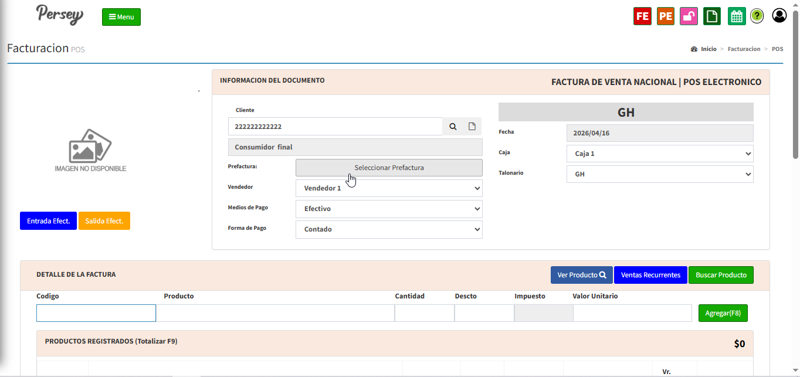
En esta sección el sistema permite registrar un nuevo tercero (cliente) directamente desde el módulo de facturación POS, facilitando la creación rápida durante una venta.
Cuando el cliente no se encuentra registrado, el usuario puede utilizar la opción de creación desde el campo de cliente.
El sistema desplegará un formulario donde se debe ingresar la información básica del tercero, como:

Ingresamos el numero de documento y damos clic en el boton de Dian y ahi desplegará los datos.
Una vez completada la información, se guarda el registro y el cliente quedará disponible automáticamente para ser seleccionado en la factura en curso.
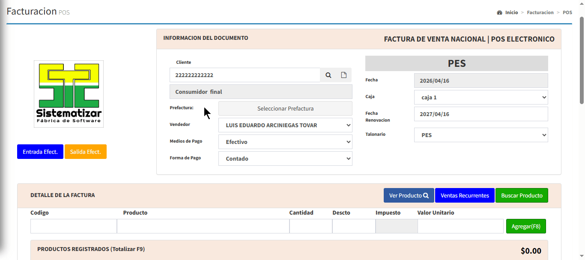
Para que funcione la prefactura tiene que estar a nombre del mismo cliente seleccionado.
Una vez creado o seleccionado el cliente, el usuario debe completar la información necesaria para continuar con el proceso de facturación.
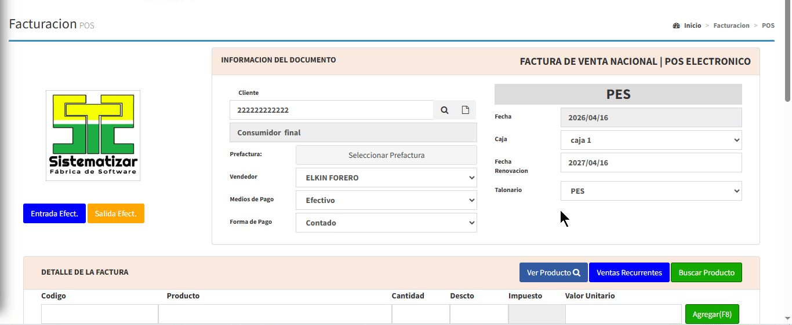
En esta etapa se deben definir los siguientes campos:
Estos datos son obligatorios para garantizar que la factura se genere correctamente y quede registrada con la información completa.
Una vez diligenciados estos campos, el usuario puede continuar con el ingreso de los productos en la sección de detalle de la factura.
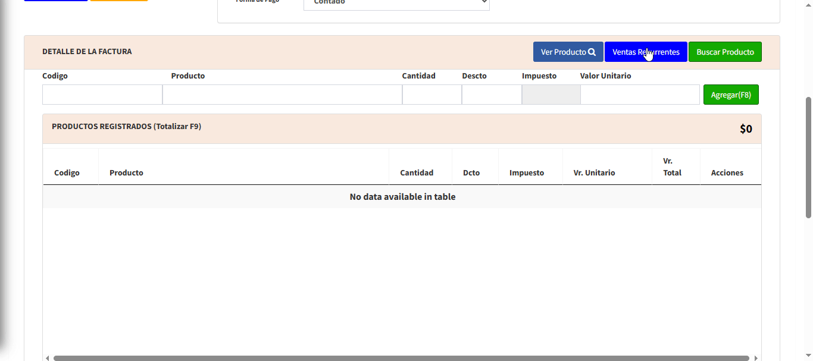
Una vez completada la información del cliente y los datos de la venta, el usuario debe proceder a registrar los productos en la factura.
En la sección Detalle de la Factura, el sistema permite agregar productos mediante las siguientes opciones:
Una vez seleccionado el producto, se deben ingresar o validar los siguientes datos:
El producto se agrega mediante el botón “Agregar” o utilizando la tecla rápida indicada en el sistema.
Los productos registrados se visualizarán en la tabla inferior, donde se mostrará el detalle de cada ítem junto con su valor total.
El sistema actualizará automáticamente el total de la factura a medida que se agregan los productos.
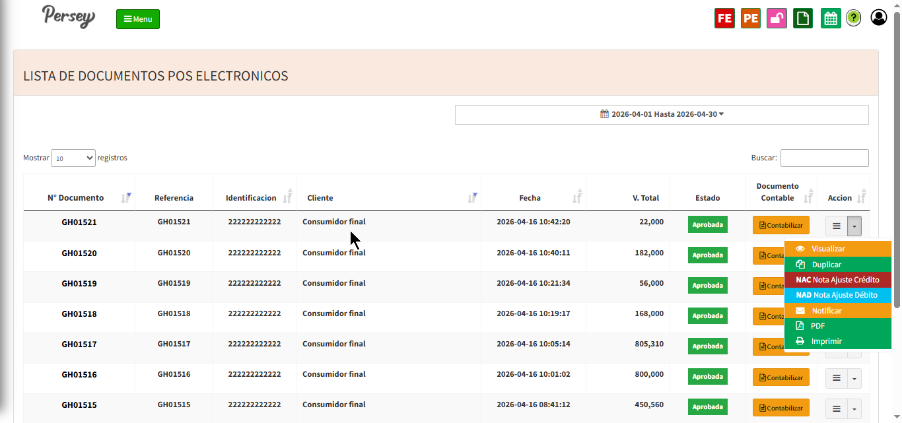
En esta sección se visualiza el listado de las facturas generadas en el sistema POS electrónico, permitiendo consultar, gestionar y realizar acciones sobre cada documento.
El sistema muestra la información principal de cada factura:
El usuario puede filtrar la información por rango de fechas o realizar búsquedas específicas.
En la columna de acciones, el sistema ofrece múltiples opciones para gestionar cada documento:
Estas opciones permiten una gestión completa de los documentos, facilitando la corrección, consulta y distribución de las facturas generadas.
En esta sección podrá visualizar todas las facturas creadas, hacer una nota credito , duplicar la factura y imprimir la factura desde una impresora POS
Para ello dirijase hacia la parte izquierda y dele click sobre la sección "Listar".
En esta seccion se podrá visualizar todos los reportes por diferentes categorías como por periodos, por impuestos, por grupos y mas.
En esta seccion podrá visualizar todos los reportes por diferentes categorías como por periodos, por impuestos, por grupos y mas.
Es importante saber que para ver cualquier tipo de reporte es necesario dar click sobre la opción "Reportes" como lo muestra la siguiente imagen.
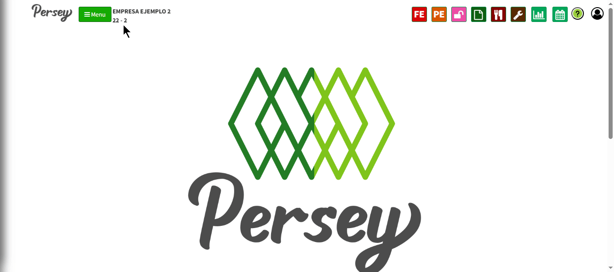
Para poder ver este reporte, se debe diligenciar el formulario, escoger el talonario, la fecha desde-hasta y darle click en el boton que dice "VER". Tambien se puede descargar en PDF dandole click en el boton que dice "PDF".
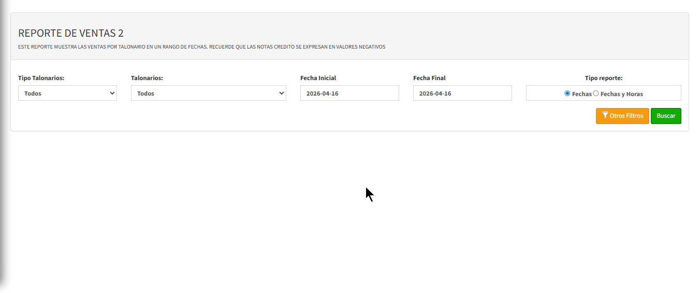
Para poder ver este reporte se debe diligenciar el formulario, escoger el talonario, la fecha desde-hasta y darle click en el boton que dice "VER". Tambien se puede decargar en PDF o Excel dando click en el boton "PDF" o "Excel".
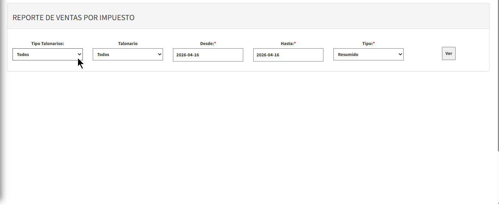
Para poder ver este reporte se debe diligenciar el formulario, escoger el talonario, el grupo, la fecha desde-hasta y darle click en el boton que dice "VER". Tambien se puede descargar en PDF dandole click en el boton que dice "PDF".
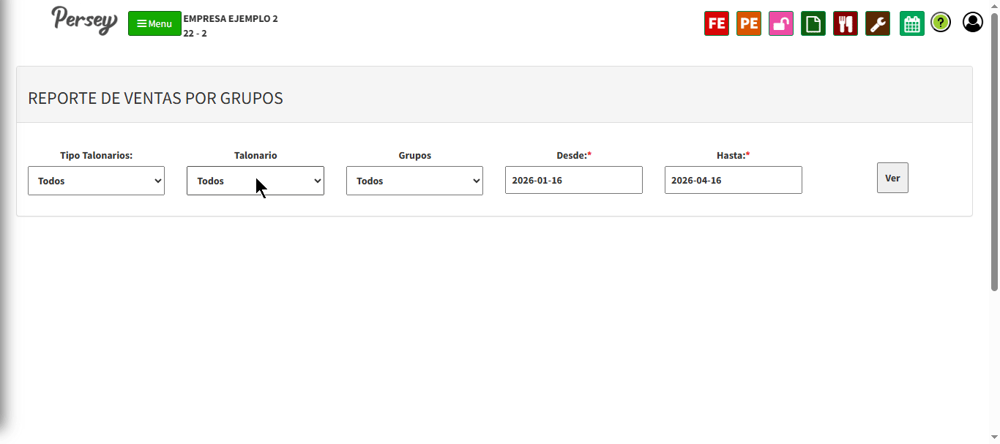
Para poder ver este reporte se debe diligenciar el formulario, escoger el talonario, el grupo, la fecha desde-hasta y darle click en el boton que dice "VER". Tambien se puede descargar en PDF dandole click en el boton que dice "PDF".
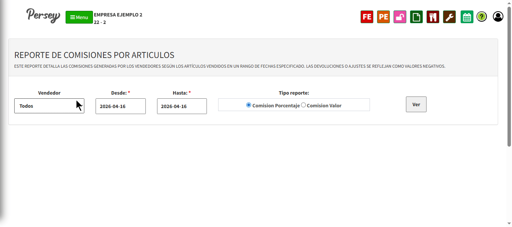
Para poder ver este reporte se debe diligenciar el formulario, escoger el talonario, la fecha desde-hasta y darle click en el boton que dice "VER". Tambien se puede descargar en PDF dandole click en el boton que dice "PDF".
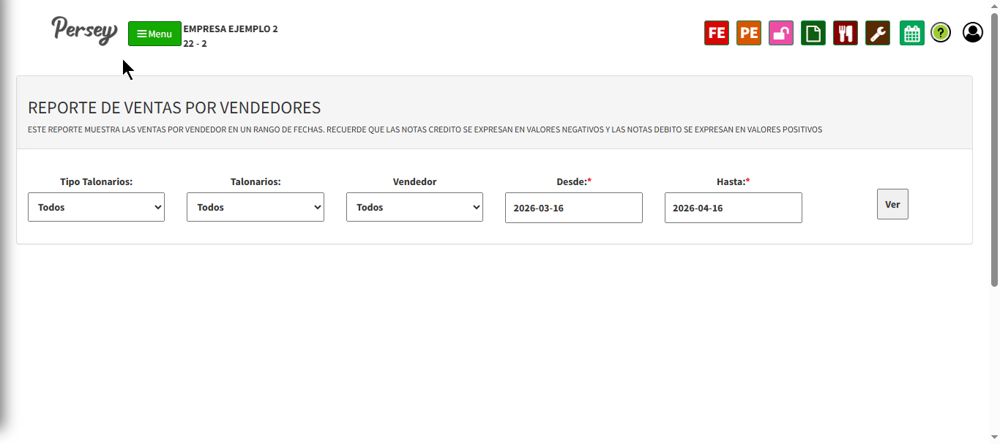
Para ver este reporte se debe diligenciar el formulario, escoger el talonario, la fecha desde-hasta y si se requiere un reporte detallado o resumido, luego darle click en el boton que dice "VER". Puede filtrar los reportes dependiendo si se requiere por articulos, cliente y fecha. Tambien se puede descargar en PDF dandole click en el boton que dice "PDF".
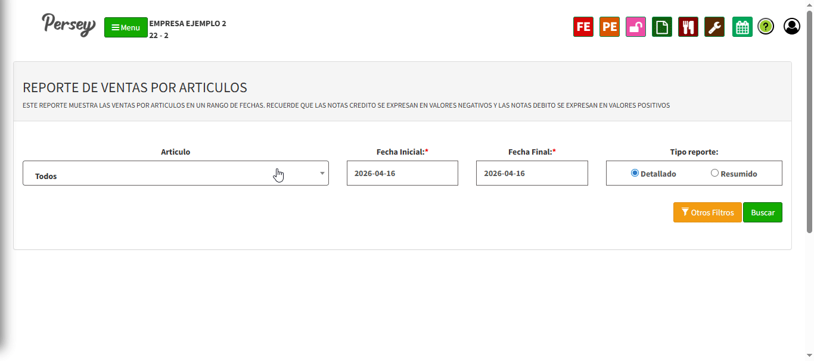
Para ver este reporte se debe diligenciar el formulario, escoger tipo de nota, la fecha desde-hasta y luego darle click en el boton que dice "VER". Tambien puede descargar el reporte en PDF dando click en el boton "PDF".
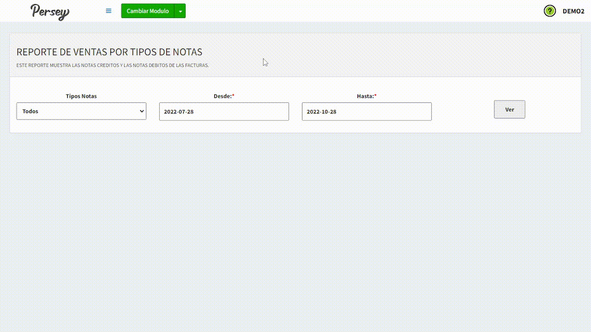
Para ver este reporte se debe diligenciar el formulario, escoger el talonario, clientes, la fecha desde-hasta y darle click en el boton que dice "VER". Tambien se puede descargar en PDF dandole click en el boton que dice "PDF"
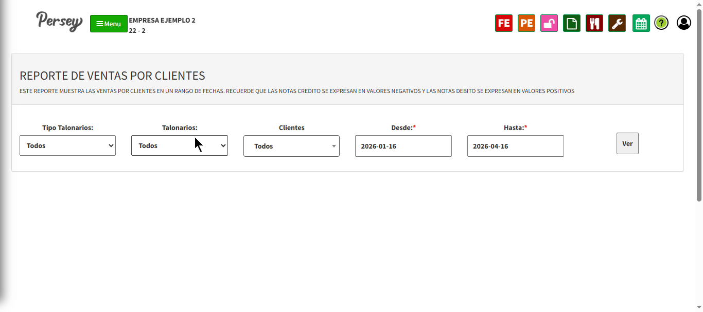
Para ver este reporte debe diligenciar el formulario , escoger el talonario, el vendedor, la fecha desde-hasta y si quiere un reporte detallado o resumido, luego darle click en el boton que dice "VER". Tambien puede descargarlo en PDF dandole click en el boton que dice "PDF"
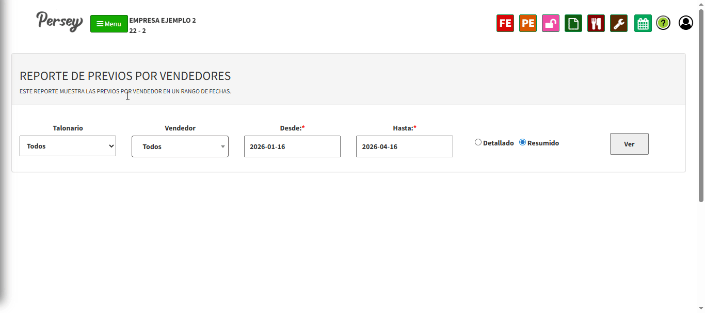
Para ver este reporte debe diligenciar el formulario , escoger el talonario, el articulo, la fecha desde-hasta y si quiere un reporte detallado o resumiodo luego darle click en el boton que dice "VER". Tambien puede descargarlo en PDF dandole click en el boton que dice "PDF"
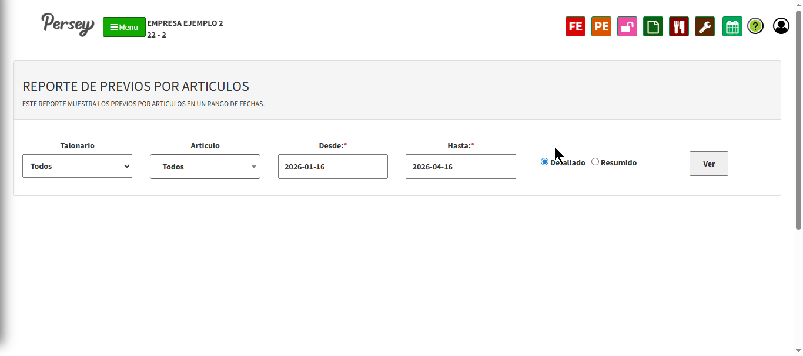
Para ver el reporte de información exogena de venta solo debe seleccionar el año y darle click en el boton que dice "VER", Tambien puede descargarlo en formato Excel dandole click en el boton "Excel"
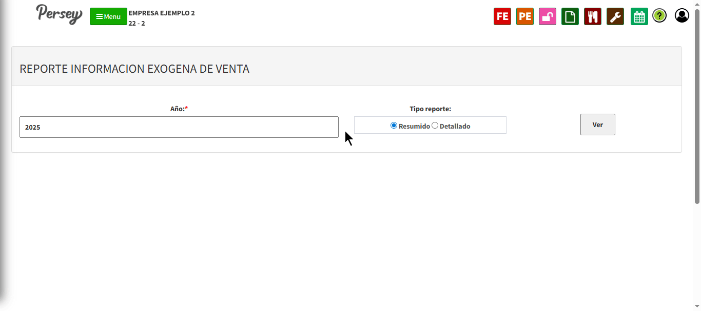
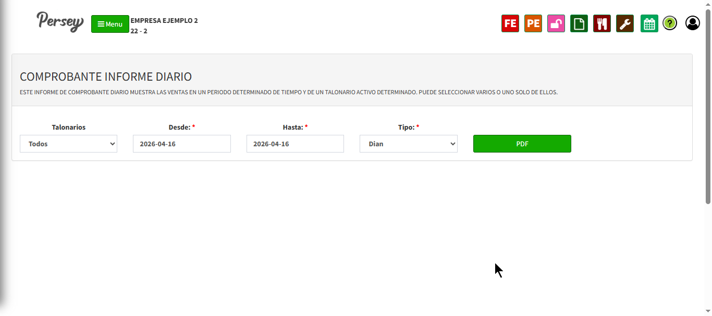
En esta sección se genera el informe diario de ventas del sistema POS, permitiendo visualizar las transacciones realizadas en un período de tiempo determinado.
El usuario debe seleccionar los siguientes parámetros para generar el reporte:
Una vez definidos los filtros, el usuario debe hacer clic en el botón “PDF” para generar el informe.
El sistema generará un documento con el resumen de las ventas realizadas en el período seleccionado, incluyendo la información correspondiente a los talonarios activos.
Este reporte es útil para control interno, auditoría y cumplimiento de obligaciones fiscales.
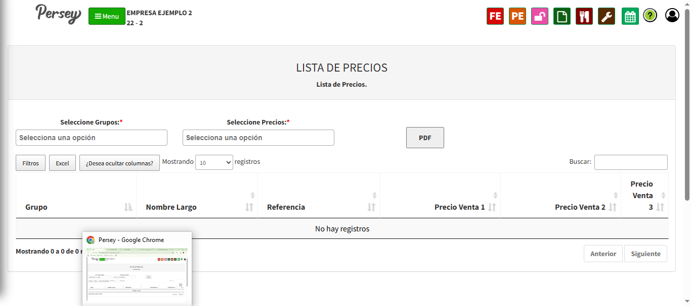
En esta sección se permite consultar y gestionar las listas de precios de los productos registrados en el sistema.
El usuario puede filtrar la información mediante los siguientes criterios:
Adicionalmente, el sistema ofrece opciones para facilitar la visualización de la información:
La tabla de resultados muestra la siguiente información:
El usuario puede generar un reporte en formato PDF utilizando el botón correspondiente.
Esta funcionalidad permite consultar y validar los precios de los productos antes de realizar una venta, asegurando coherencia en la facturación.
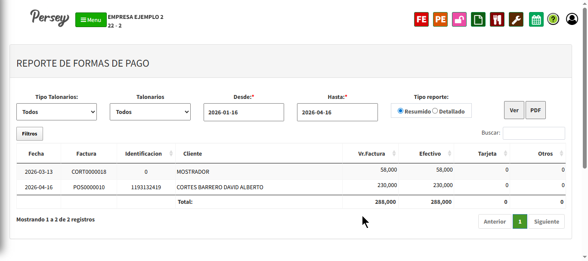
Permite consultar las ventas realizadas según los medios de pago utilizados en un período determinado.
El usuario puede visualizar el reporte o exportarlo en PDF.
Se muestra el valor total de las facturas y su distribución en efectivo, tarjeta u otros medios de pago.
En esta seccion se podrá visualizar todos los terceros que tiene registrados, tambien podrá editarlos, eliminarlos y agregar nuevos
En este módulo se registran los clientes que serán utilizados en la facturación POS electrónica. Para crear un nuevo tercero, se debe hacer clic en el botón "Nuevo" y completar la información solicitada.
Uno de los campos más importantes es el Tipo de Persona, ya que define cómo se diligencia la información del cliente:
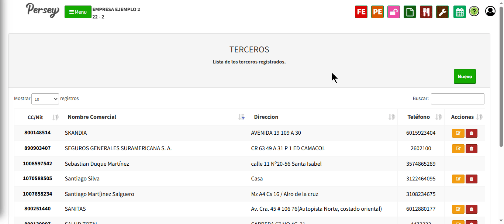
Campos principales:
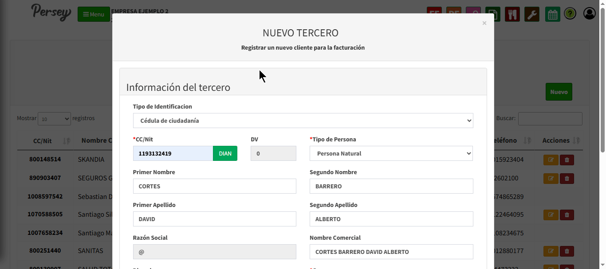
Campos principales:
Seleccionar correctamente el tipo de persona garantiza que la facturación electrónica cumpla con los requisitos de la DIAN.
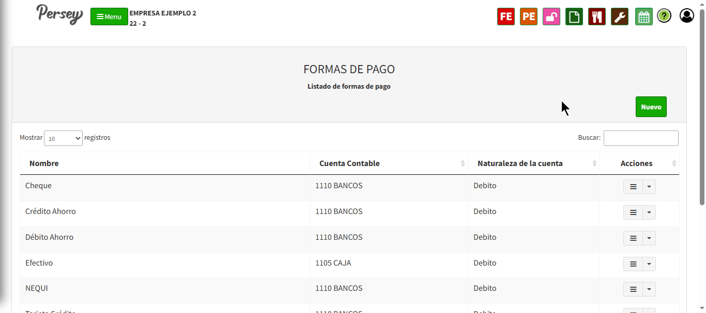
En este módulo se configuran las formas de pago que estarán disponibles en el sistema de facturación POS electrónico. Estas permiten registrar cómo se reciben los pagos de los clientes.
Se muestra un listado con las formas de pago creadas, incluyendo:
Para registrar una nueva forma de pago, haga clic en el botón "Nuevo" y diligencie los campos correspondientes.
Las formas de pago configuradas estarán disponibles al momento de realizar una factura, permitiendo distribuir el pago entre diferentes medios como efectivo, tarjeta u otros.
Se recomienda configurar correctamente la cuenta contable de cada forma de pago para garantizar una adecuada integración con la contabilidad.